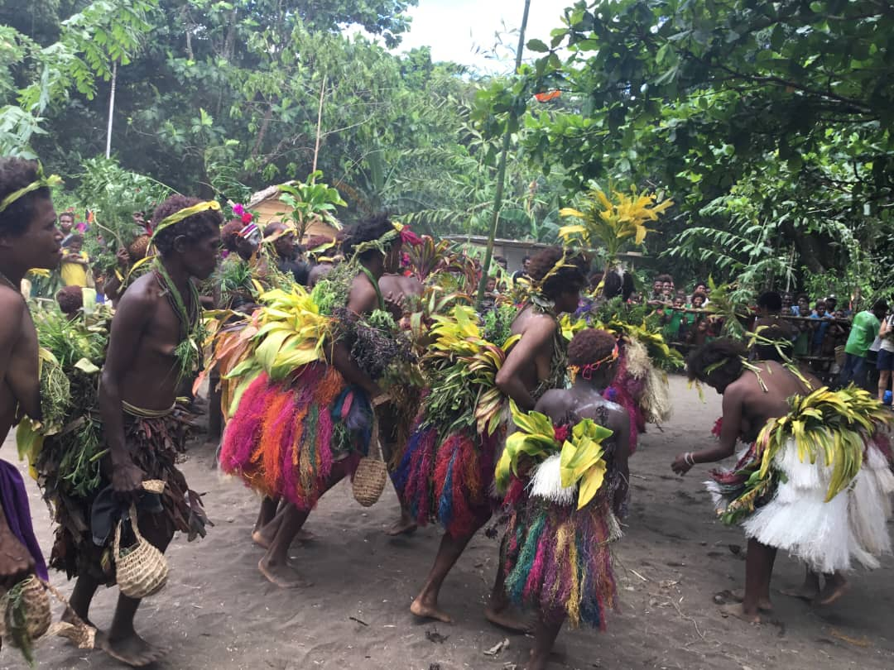
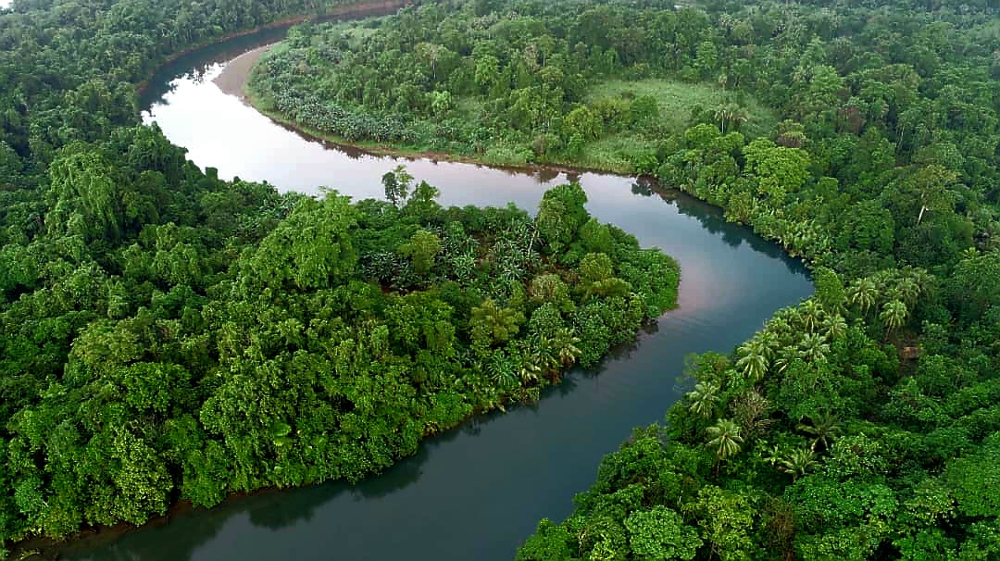
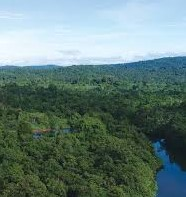
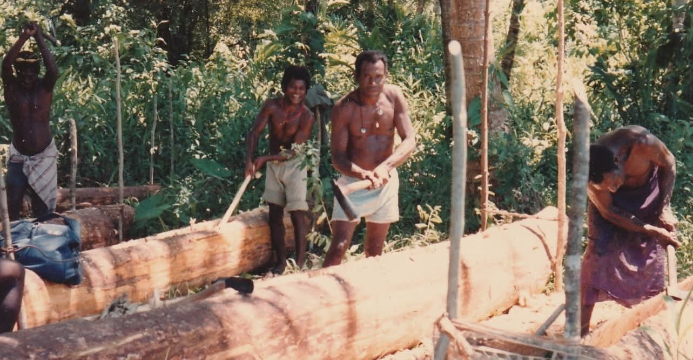

Our Story & Conservation Mission
Tavolo Community Conservation Association operates the Tavolo Wildlife Management Area (WMA) - a community-led conservation initiative protecting pristine rainforest while supporting authentic tourism and local livelihoods.
Tavolo Community Conservation Association
The Tavolo Community Conservation Association (TCCA) was established to protect the rainforests and unique ecosystems of the Pomio District in East New Britain Province, Papua New Guinea. Through a innovative partnership model, the TCCA manages the Tavolo Wildlife Management Area (Tavolo WMA), spanning thousands of hectares of pristine rainforest that would otherwise face logging threats.
Our Conservation Goals
- Protect biodiversity hotspots from commercial logging and resource extraction
- Preserve traditional Indigenous lands and cultural practices of the Lote communities
- Generate sustainable income for local communities through conservation-linked tourism
- Build capacity for community-based forest management and monitoring
- Support climate change mitigation through forest protection

Tavolo Wildlife Management Area (WMA)
The Tavolo WMA represents one of Papua New Guinea's most successful community-managed conservation areas. Operating under PNG's Wildlife Management Area framework, it combines traditional Indigenous governance with modern conservation science to protect multiple ecosystem types - from lowland rainforest to riverine zones and coastal areas.

Conservation Outcomes:
- Over 10,000 hectares of forest under active protection and management
- Zero commercial logging on community-controlled lands since WMA establishment
- Recovery of wildlife populations within protected zones
- Development of sustainable tourism infrastructure that generates community revenue
- Strengthened Indigenous rights and land tenure security
The WMA model demonstrates that communities can be effective stewards of their natural resources while improving livelihoods through responsible tourism.
Partnership with Forest PNG & Conservation Partners
Tavolo TCCA works in close partnership with Forest PNG and international conservation organizations to support best-practice forest management and expand conservation impact across East New Britain Province.
Forest PNG Partnership Focus:
- Monitoring & Evaluation: Joint wildlife monitoring programs track ecosystem health and conservation effectiveness
- Capacity Building: Training local rangers and community monitors in conservation techniques and wildlife research
- Market Linkages: Supporting sustainable tourism enterprises and artisan markets managed by local communities
- Policy Advocacy: Working with provincial government to strengthen legal protections for community lands
- Climate Action: Contributing to PNG's climate commitments through verified forest protection
This collaborative approach ensures conservation work reaches far beyond Tavolo's borders, creating a landscape-scale conservation network across PNG.

Community Benefits & Sustainable Livelihoods
Conservation can only succeed when local communities benefit directly from forest protection. Tavolo TCCA ensures that tourism and conservation generate meaningful income for residents while respecting cultural values and land rights.

How Communities Benefit:
- Employment as guides, hospitality staff, and tourism operators
- Revenue sharing from visitor fees and accommodation services
- Improved access to healthcare, education, and infrastructure
- Preservation of traditional languages, hunting grounds, and cultural practices
- Increased bargaining power against logging companies and extractive industries
When forest protection generates sustainable income, communities become the strongest advocates for conservation. This is the foundation of our long-term success.
The Conservation Challenge
Papua New Guinea's rainforests face intense pressure from logging, mining, and agricultural expansion. In East New Britain, community forests have historically been targeted by commercial logging operations offering short-term payments that result in long-term ecological and cultural loss.
Tavolo TCCA's conservation model addresses this challenge by demonstrating that forests are worth more alive than cleared. Through community-controlled tourism and forest management, local people earn sustainable income while protecting the biodiversity and carbon that benefit all humanity.